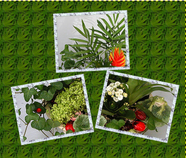
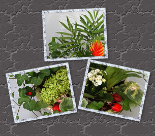

Композиция из рамок
Цель урока
Создать композицию из фоторамок.
Задачи
- отработка навыков работы с графическим редактором;
- повторение и закрепление навыков умения работать с инструментами редактора.
Требования к уровню подготовки обучающихся
Должны знать: инструменты и возможности редактора.
Должны уметь: работать с инструментами редактора, создавать оригинальные композиции.
Учебный материал
Ознакомьтесь, пожалуйста, с разделами справки.
|
|
Этапы работы
На уроке мы будем создавать интересную композицию из рамок на изображении.
1. Запускаем редактор GIMP.
2. Открываем файл с исходным изображением: Меню - Файл - Открыть.
{kind=link}
3. Создадим новый слой: Слой - Создать Слой. Размер - 250х200 рх, Фон - прозрачный.
4. Выберем инструмент Плоская заливка (Shift+B) и зальем этот слой каким-нибудь цветом или текстурой. Тип заливки будет определять, как будут выглядеть рамки фотографий, поэтому цвет выбираем на свое усмотрение.
5. Создадим три дубликата слоя. Для копирования слоя достаточно нажать кнопку под списком слоев или клавиши Shift+Ctrl+D. Все слои с рамками у нас оказались один под другим, поэтому мы выбираем инструмент Перемещение и размещаем наши рамки по всему изображению. Можно оставить рамки как есть, можно их немного покрутить инструментом Вращение (Shift+R) , чтобы придать легкую небрежность.
6. Щелкаем ПКМ на одном из слоев и в контекстном меню выбираем Альфа-канал в выделение (то же самое доступно в меню Слой - Прозрачность). Вокруг выбранной рамки на изображении появится выделение. Теперь уменьшим его на 10-15 пикселей через меню Выделение - Уменьшить. Контур выделения должен стать чуть меньше.
7. Удаляем внутреннюю часть рамки: нажимаем клавишу Delete.
8. Проделываем операции 6-7 для всех рамок.
Другой вариант: рамки с фрагментами изображения
1.Повторяем пункты 1-7.
2. Не снимая выделения переходим на слой с фотографией, у нас это слой Фон, и копируем выделенную часть изображения Ctrl+C (Правка - Копировать). Снова возвращаемся на тот же слой с подготовленной рамкой и жмем Ctrl+V (Правка - Вставить).
3. Выполняем эти операции для всех рамок.
4. Удаляем фон.
5. Создаем новый слой, заливаем его цветом, или текстурой.
6. Для реалистичности добавим к нашим фоторамкам тень любым удобным способом. Например, меню Фильтры - Свет и тень - Отбрасываемая тень.
7. Операцию по созданию тени нужно проделать с остальными рамками. Это очень удобно можно сделать через меню Фильтры - Повторить "Отбрасываемая тень" или еще проще - Ctrl+F, что очень упрощает работу - выбрали слой с рамкой, нажали Ctrl+F и тень появилась с теми же параметрами.
|  |  |